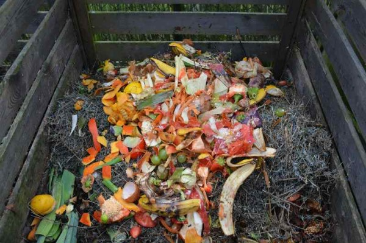
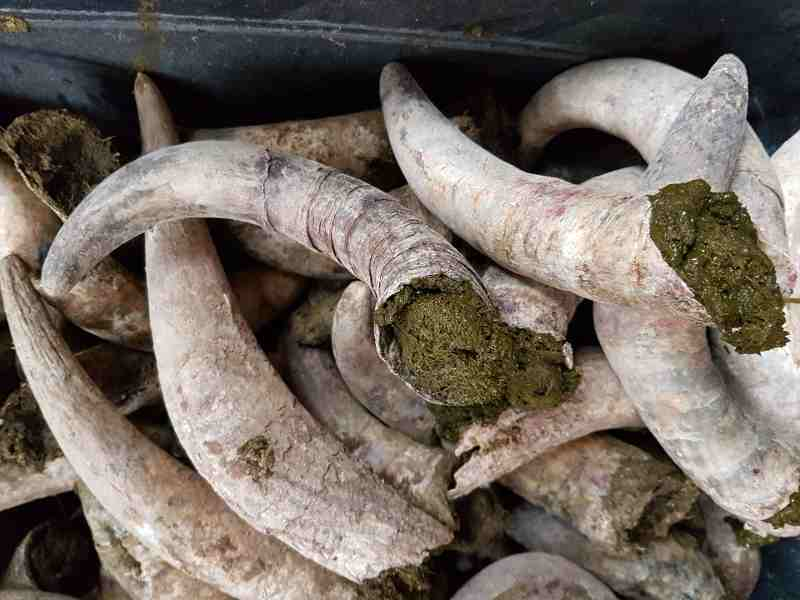
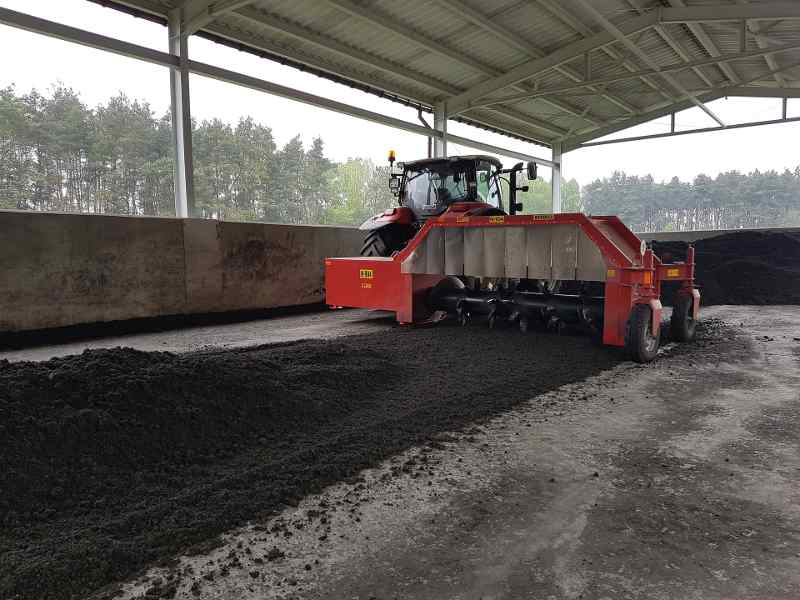

‘Healthy eating, happy eating’ has become the latest mantra. People nowadays want to eat healthy and moreover eat what is directly derived from the lap of nature. In other words, people are growing increasingly aware of food that is grown without any use of synthetic fertilizers and chemicals- grown organically. Therefore, more and more farmers are switching over to organic farming.
The most principle of organic farming is the fact that it treats soil as a living entity. The fertility of the soil is never compromised upon and crops that are grown in the soil are indigenous crops. Crop rotation is practiced very religiously in organic farming so that the health of the soil is maintained. As per the International Federation of Organic Agriculture Movement, organic farming is based on the principles of health, ecology, fairness and care in that order.
What is Organic Manure?Organic manure is nutrient derived from organic sources like animal waste, vegetable compost, agricultural residues, human excreta, etc. Basically they are natural materials that decay and get mixed with the soil thereby increasing its fertility. The main idea behind providing organic manure is to break down the complex inorganic nutritional supplements into simpler organic ones that can be easily absorbed and assimilated by the plants. Manures having a low nutrient content have residual effect for a longer period of time. It also improves the quality of the soil. Some of the major manure sources are:
Besides these kitchen waste can be used to make organic manure for gardening.
Manure is a huge aggregate of nutrients and hence they are classified into bulky and concentrated organic manure.
Bulky ManureThey contain nutrients in small quantities. Hence they are applied in large quantities to the fields. They are of different types but farmyard manure, green manure and compost are the most commonly used forms of bulky organic manure. The advantages of using bulky manure as below:
Dung, urine, cattle litter, fodder feed and leftover roughage of the farm animals in dairy farming together forming a decomposed mixture is called farmyard manure. Well decomposed manure would contain on an average 0.5% potassium oxide, 0.2% phosphorus pentoxide and 0.5% nitrogen. Nitrogen is present in the form of urea in the urine of cattle and it is subject to volatilization. Other ways of nutrient loss is leaching and volatilization.
For manure preparation, the refuse and various forms of litter are spread on the floor of the shed and left overnight. This helps in urine absorption. Trenches are dug and the urine-soaked refuse is dumped into the trench along with the required amount of dung. The trenches are a meter in depth, 2 meters in width and 7.5 meter in length. The trench is filled upto the brim, then plastered with slurry of cow dung. This process is repeated with a second trench and so on. The manure is ready for use within 4-5 months of plastering. If it is difficult to collect urine from the shed then it can be collected along with the cattle shed washings into a pit dug specially for this purpose. It is later added to the main manure from there. About 3-4 weeks before sowing farmers apply partly rotted manure. Well rotted manure is on the other hand applied immediately after sowing. For cultivating vegetables, the manure is applied at least 2 weeks in advance. This prevents nitrogen immobilization. Some farmers scatter the filed with small heap of manure. This leads to nutrient loss especially if it is left for very long. Incorporating the manure by spreading it on the field followed by almost immediate ploughing can help reduce the nutrient loss.
Droppings of goat and sheep contain a higher amount of nutrients than that of compost or farmyard manure. On an average it contains 3% nitrogen, 2% potassium oxide and 1% phosphorous pentoxide. It can be used in two ways:
Bird droppings in a poultry farming contain the highest amount of phosphorus and nitrogen as compared to other organic manure. If not utilized quickly the nitrogen is lost. 50% nitrogen is lost within 30 days if left exposed. Poultry manure is a very precious source of organic manure since it ferments quickly and is easily available. It contains 1.4% potassium oxide, 3.03% nitrogen and 2.63% phosphorous pentoxide.
Other ManureBlood meal, bone meal, horn meal, hoof meal, etc. are other forms of organic concentrated manure which is also an excellent nitrogen source.
Manure is prepared by the process of decomposition. It is the process of biodegradation carried out by a set of microorganisms. It is controlled by a host of different factors like moisture, aeration, C/N ratio of the organic matter, size of the raw material, temperature and pH.
Carbon: Nitrogen RatioFor crop residues of cereals like jowar, wheat, bajra, maize, etc. the ratio of carbonaceous and nitrogenous materials is very high which means that the nitrogen quantity is very low. Therefore the microbial activity is not efficient and it needs a longer period for composting. A carbon-nitrogen ratio of 26:40 is ideal for composting.
MoistureThe ideal moisture must be maintained around 50%. If the moisture content is high then oxygen would get dissolved in water and the compost would emit an odor. It also results in partial decomposition.
pHThe compost is initially on the acidic side- around 6.0. However as the temperature increases it becomes alkaline. Mature compost has a pH of 7.5 to 8.5.
Green ManureIn organic farming, this is yet another form of manure preparation. In this however, plants are actually grown along with the main crop for accumulation of nutrients. These plants are usually cut down before flowering. Once they are worked into the soil they release the nutrients quickly and decompose within a very short span of time. Some farmers also collect plant materials and integrate it within the soil. Commonly plants are grown along the side of the field or as a part of agroforestry system. Some farmers use twigs and leaves for mulching and the same is incorporated into the soil for decomposing and hence as manure.
Advantage of Organic ManureOrganic manure is an easy, economical and friendly way of making nutrients available to plants. This can be also done on a small scale basis in smaller farms or in a large agricultural land. The biggest advantage is that it requires no or minimum investment.
In addition to making the manure available to own farms they can be also sold to other farmers as well. Commercial organic manure production is a very profitable business.
References: